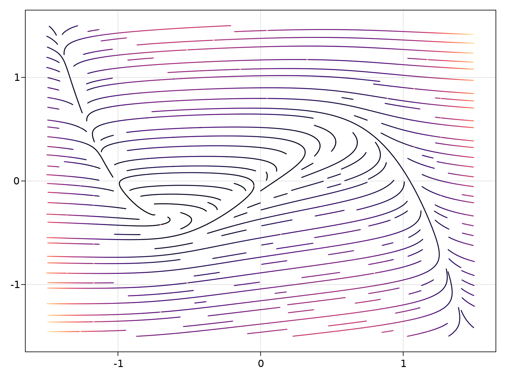

streamplot
Makie.streamplot — Functionstreamplot(f::function, xinterval, yinterval; kwargs...)
f must either accept f(::Point) or f(x::Number, y::Number). f must return a Point2.
Example:
v(x::Point2{T}) where T = Point2f0(x[2], 4*x[1])
streamplot(v, -2..2, -2..2)Attributes
Available attributes and their defaults for Combined{Makie.streamplot, T} where T are:
ambient Float32[0.55, 0.55, 0.55]
arrow_head MakieCore.Automatic()
arrow_size 0.03
color :black
colormap :viridis
colorrange MakieCore.Automatic()
cycle [:color]
density 1.0
diffuse Float32[0.4, 0.4, 0.4]
gridsize (32, 32, 32)
inspectable true
lightposition :eyeposition
linestyle "nothing"
linewidth 1.5
maxsteps 500
nan_color RGBA{Float32}(0.0f0,0.0f0,0.0f0,0.0f0)
overdraw false
quality 16
shininess 32.0f0
specular Float32[0.2, 0.2, 0.2]
ssao false
stepsize 0.01
transparency false
visible trueImplementation
See the function Makie.streamplot_impl for implementation details.
Examples
using CairoMakie
struct FitzhughNagumo{T}
ϵ::T
s::T
γ::T
β::T
end
P = FitzhughNagumo(0.1, 0.0, 1.5, 0.8)
f(x, P::FitzhughNagumo) = Point2f0(
(x[1]-x[2]-x[1]^3+P.s)/P.ϵ,
P.γ*x[1]-x[2] + P.β
)
f(x) = f(x, P)
streamplot(f, -1.5..1.5, -1.5..1.5, colormap = :magma)